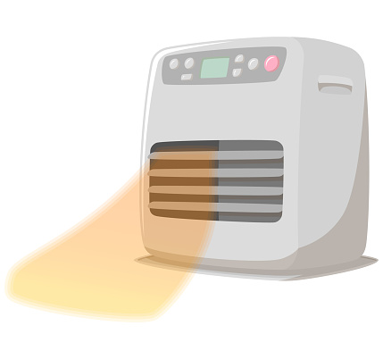
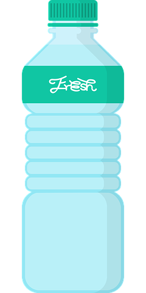
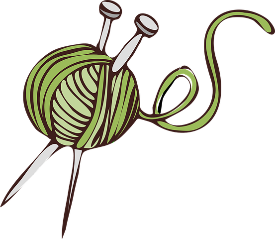

You have an empty plastic bottle. Where do you throw it away?
You have to get to school, which is 1 mile away. Which mode of transportation do you use?
It's 4 PM on a sunny day and you're inside. Which light do you use to work?
It's a cold day. What do you use to get warm?


Where do you usually get your water from at home?

What is your lawn (if you have one) made of?

What do you do with extra food?
Where do your clothes come from?

What would you do if you see your friend litter?
How aware do you think you are of the causes and effects of climate change?
Why should you strive for greener options? Source: NASA